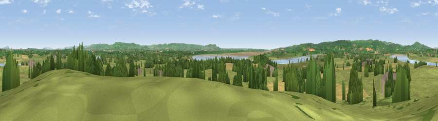

Barrow Hill
#8426 in England · top 17% of its area beats it · near FretherneThe view, rendered

A 360° render of this exact spot computed from the terrain model, tree cover and land cover — summer colours, afternoon light, calibrated against photographs of famous viewpoints. Real trees, hedges and buildings will differ in detail.
The panorama
Grey silhouette: terrain skyline in each direction (720 bearings, Earth curvature and refraction included). Dashed green: skyline with trees (+15 m) and buildings (+8 m) as obstacles. Blue strip: how far the ground is visible on each bearing.
Where the view opens
Wedge length = distance to the farthest visible ground on that bearing (vegetation-aware). Rings at 10, 25 and 50 km.
What fills the view
59% grassland · 17% cropland · 15% woodland · 7% water · 3% built-up
Angular shares of the visible panorama (visual magnitude), not map area. Landscape diversity 0.51 (0–1 Shannon).
Key numbers
More beautiful places nearby
The staircase of upgrades: each row has a higher view potential than everything closer. Driving times are estimates from straight-line distance, calibrated against real road routing — check an actual route before setting out.
| Place | Direction | Drive | Score |
|---|---|---|---|
| Blaize Bailey Viewpoint | WNW · 6 km | ~13 min | 69.3 |
| Viewpoint near Littledean | WNW · 6 km | ~13 min | 73.8 |
| Viewpoint near Huntley | NNW · 9 km | ~18 min | 75.0 |
| Haresfield Beacon | E · 9 km | ~18 min | 75.7 |
| Viewpoint near Nympsfield | SE · 11 km | ~21 min | 77.5 |
| Viewpoint near Stinchcombe | S · 12 km | ~22 min | 79.4 |
| Viewpoint near Stinchcombe | S · 12 km | ~23 min | 80.5 |
| Chase End Hill | N · 25 km | ~41 min | 81.5 |
51.79002, -2.39250 · source: osm peak · position refined by local search. Computed location — check access rights before visiting.